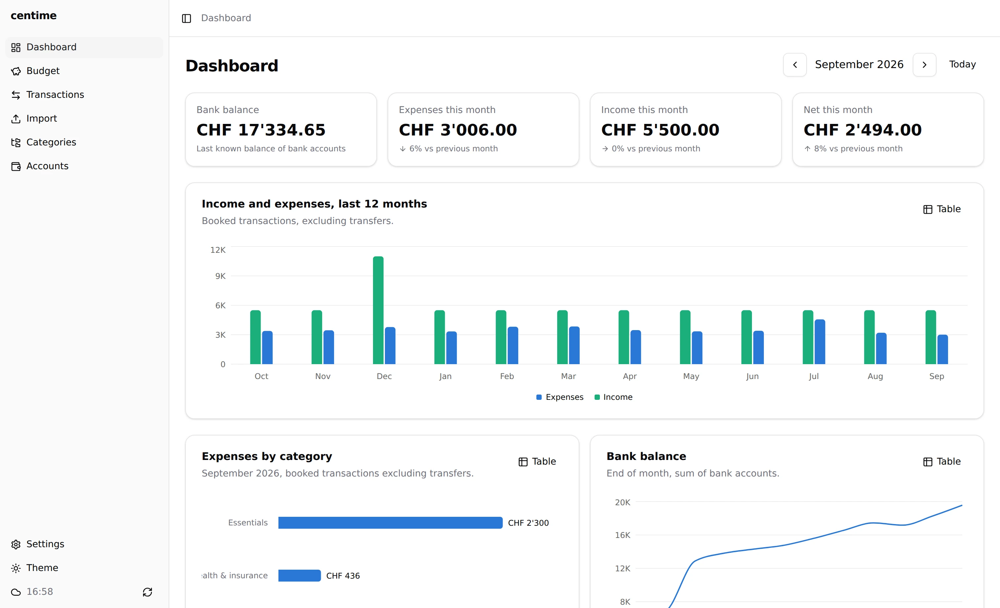
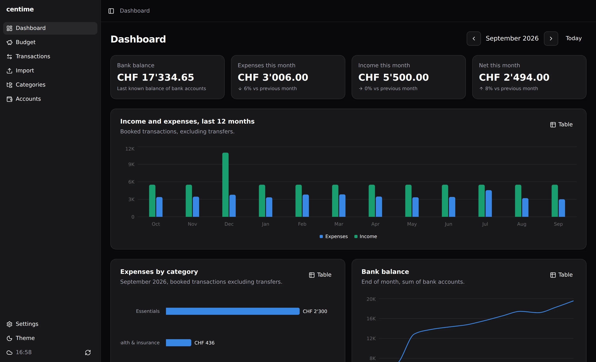
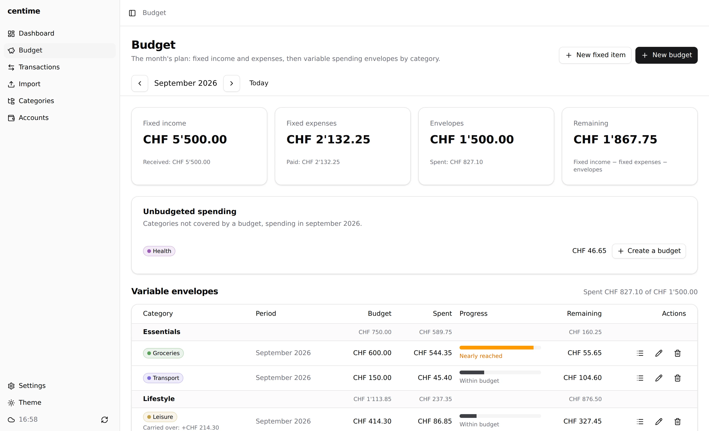
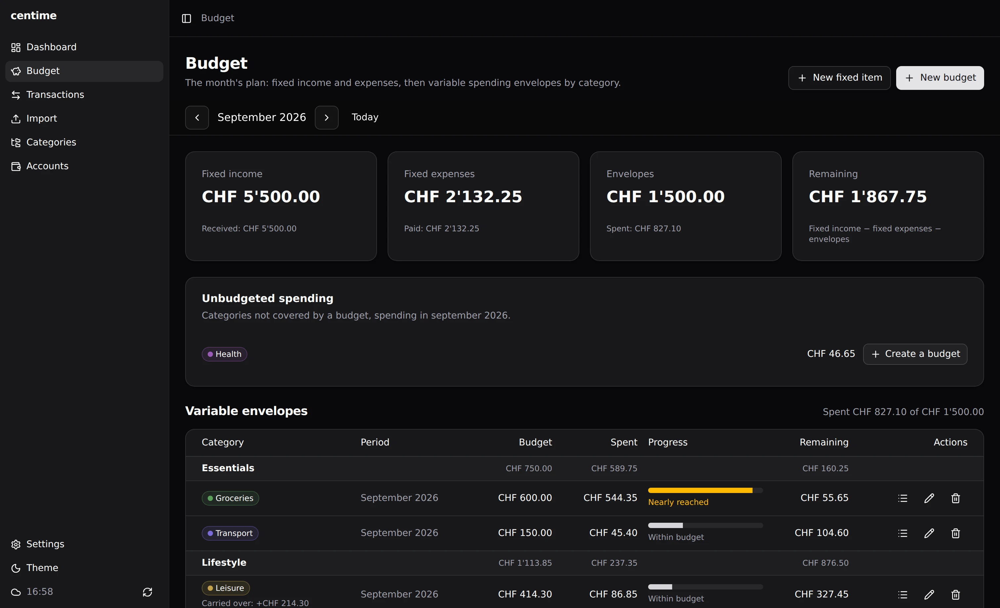
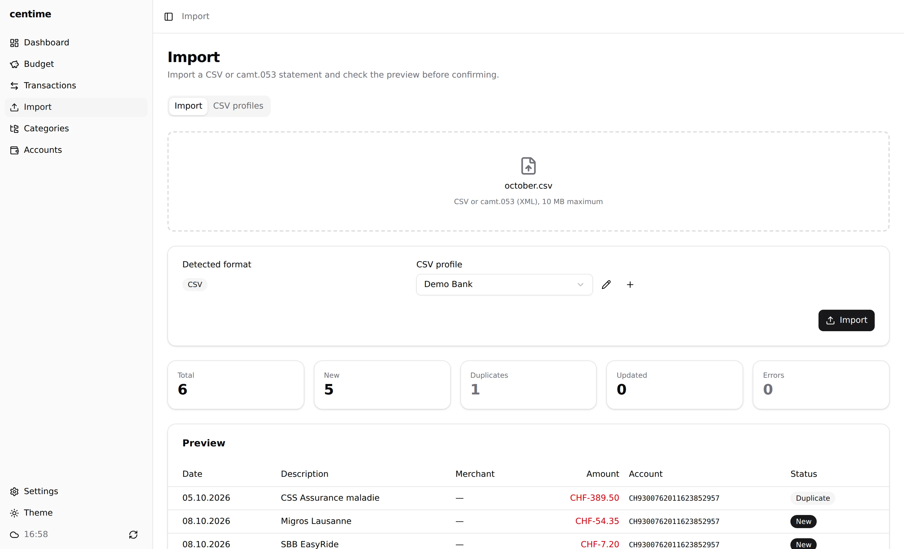
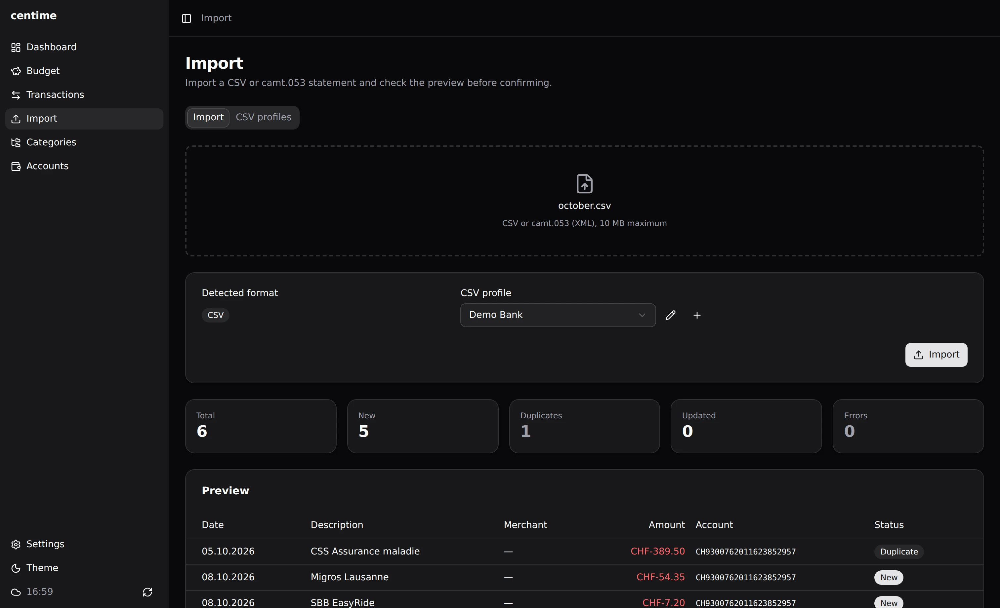

End-to-end encrypted
Your data is encrypted on your device. The sync server is a relay that only stores opaque blobs.
Personal budget manager
Centime imports your bank statements, sorts them, tracks recurring items and budgets, and syncs across your devices. The server never sees anything in clear text.


Your data is encrypted on your device. The sync server is a relay that only stores opaque blobs.
CSV with configurable provider profiles, and camt.053 XML. Duplicates are detected.
File transactions by category with “contains” or regex rules on label, merchant or provider category.
Recurring expenses and income (monthly, quarterly, yearly), matched automatically, with upcoming and overdue views.
Per-category caps, balance carry-over, projection at your current pace and history.
Fixed items and budgets on one page, with what remains of the month once everything is accounted for.
Balance, spending, income and net versus last month, 12-month charts, category breakdown and points of attention.
The same UI in the browser or as an offline Tauri app for Windows, macOS and Linux. Devices stay in sync.




On first launch Centime generates a 32-byte master key and shows it as a recovery key. Everything is derived from it on your device: the user id, the auth secret and the AES-256-GCM encryption key. There is no password and no account to hand over.
master key (32 bytes, stays on device)
├─ HKDF → user id (public)
├─ HKDF → auth secret (server stores SHA-256)
└─ HKDF → AES-256-GCM key (never leaves device)git clone https://github.com/adrien-cardinale/centime.git
cd centime
docker compose up -d
# open http://localhost:3000One container, one SQLite file. Self-hosting guide →